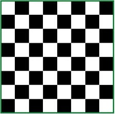

Bàn cờ vua là một hình vuông gồm n x n ô. Để dễ dàng cho các đấu thủ trong việc chơi cờ. Người ta tô màu ô đen xen kẽ với ô trắng.

Yêu cầu: cho số nguyên n, hãy vẽ bàn cờ vua kích thước n x n. Biết rằng ô đầu tiên ở góc trên bên trái là ô trắng. Mỗi ô đen là 1 khối 3x3 ký tự B, mỗi ô trắng là 1 khối 3x3 ký tự W (xem ví dụ để hiểu thêm)
Dữ liệu nhập:
- Là số nguyên n ( 1 ≤ n ≤ 50)
Dữ liệu xuất:
- Gồm 3n dòng, mỗi dòng gồm 3n ký tự B (màu đen) hay W (màu trắng)